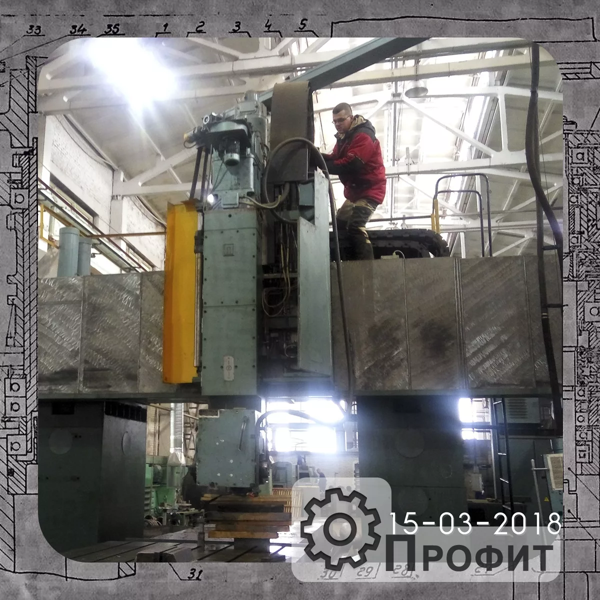
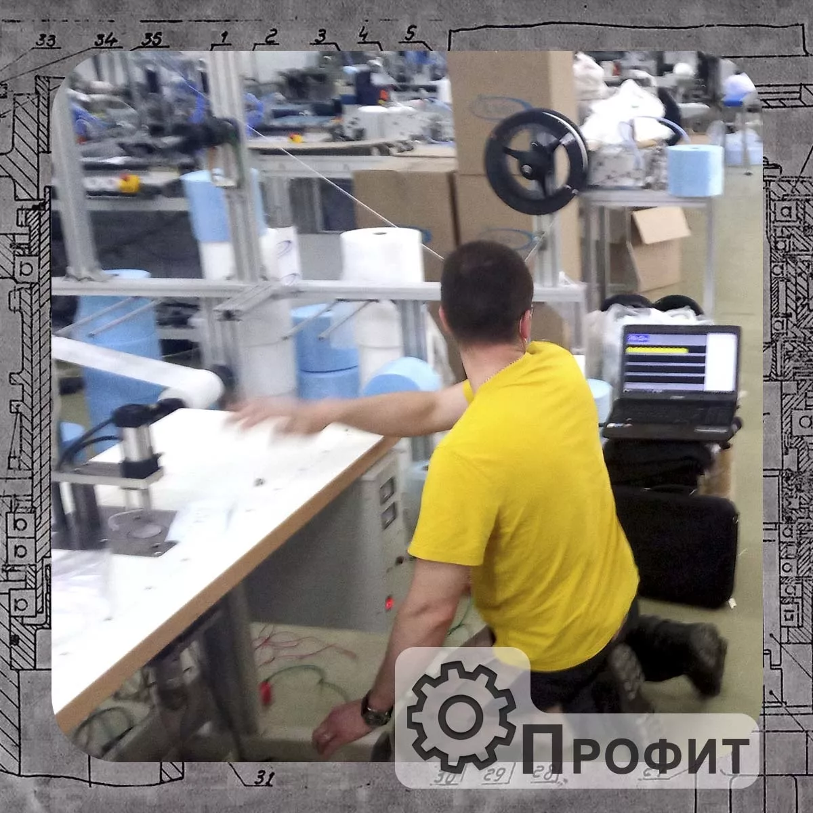
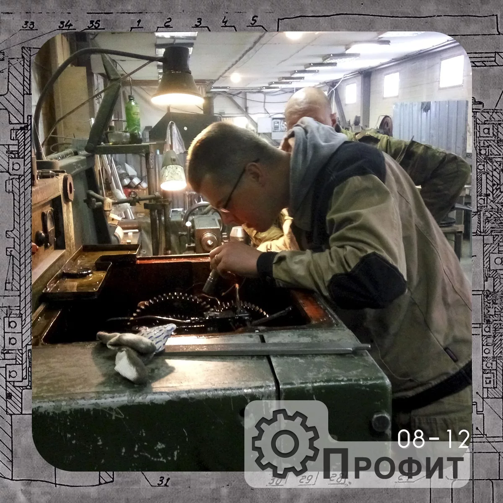
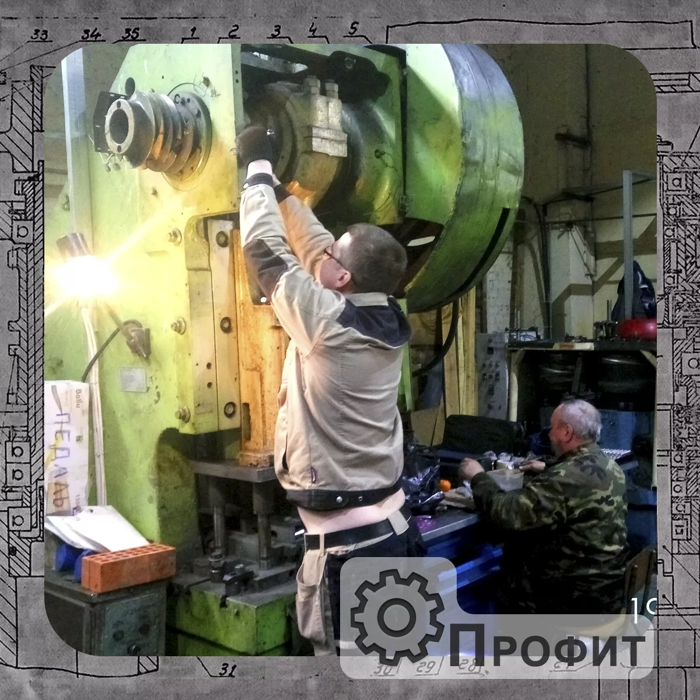
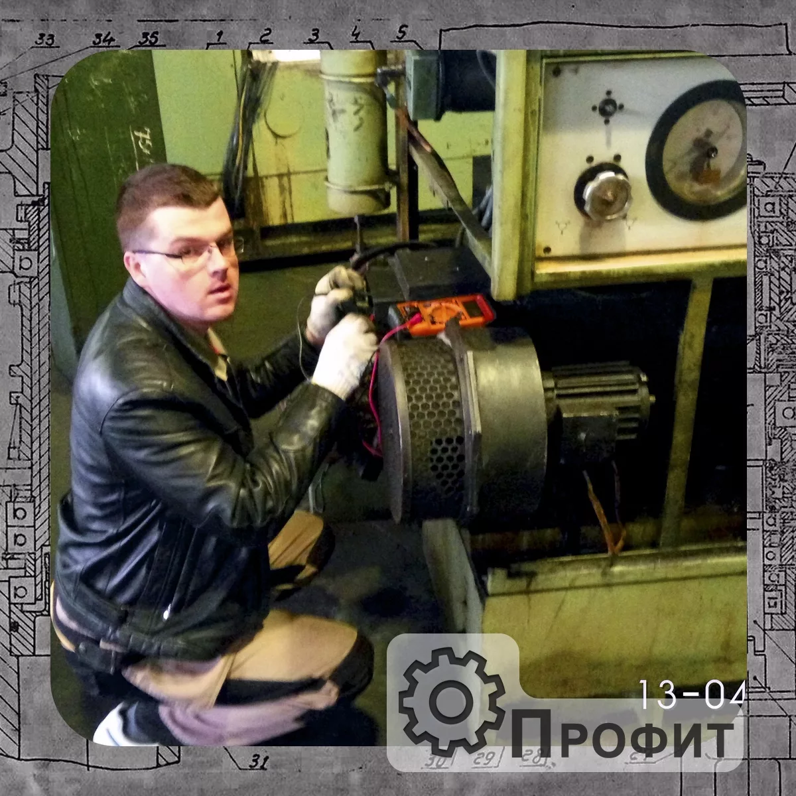
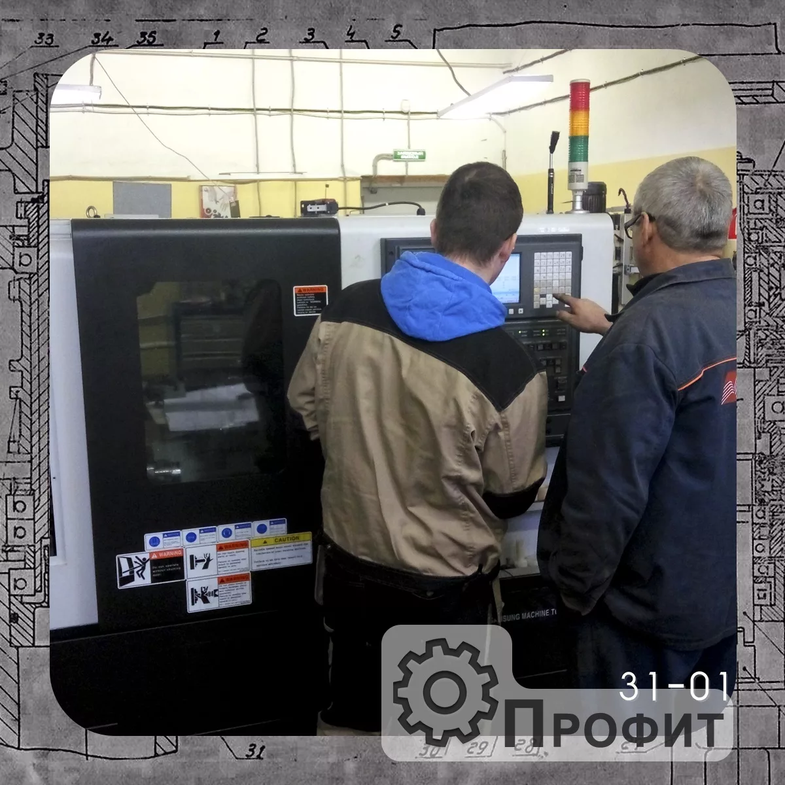
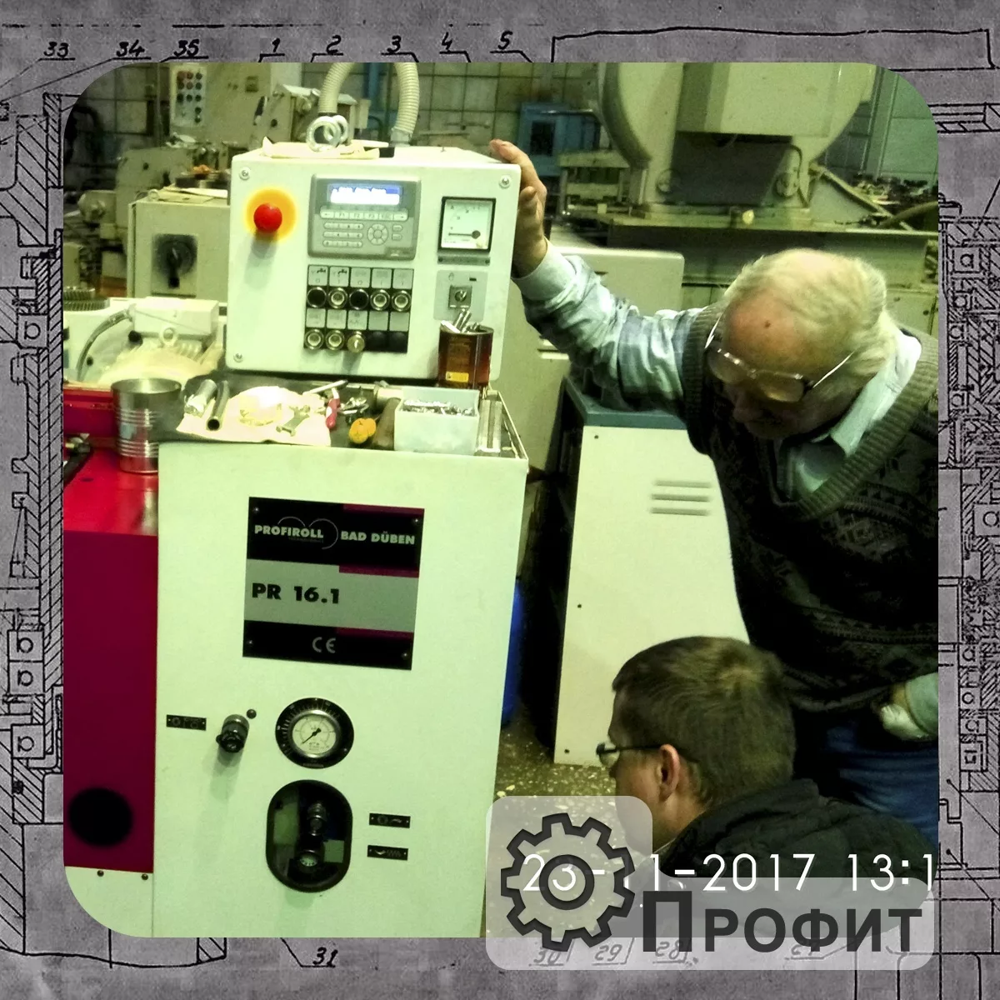
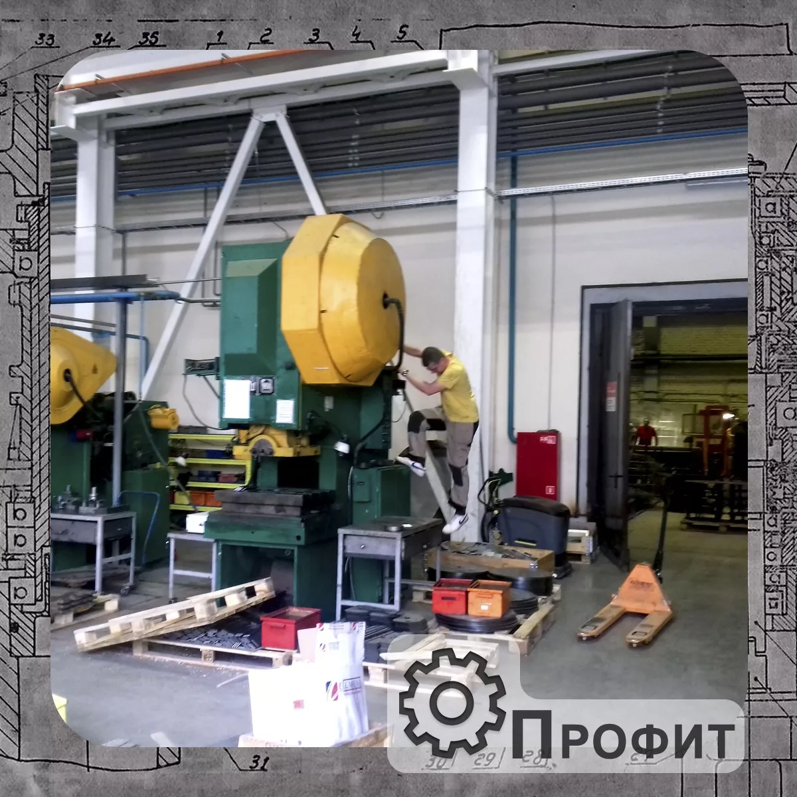

Мы предоставляем полный комплекс работ по диагностике промышленного оборудования в Москве и Московской Области. Опыт работы более 12 лет. Диагностика - позволяет выявить элементы (узлы, агрегаты) исчерпавшие свой ресурс (близки к этому), составить дефектную ведомость, план ремонта, время на ремонт, рассчитать стоимость работ (заменяемых или изготавливаемых элементов оборудования).


Для чего нужна диагностика промышленного оборудования - Общий смысл диагностики, всестороннее изучение оборудования, узлов и агрегатов, устройств, систем; выявление отклонений, дефектов; предсказание возможных отклонений. Ряд вышеперечисленных понятий и есть то, для чего нужна диагностика в целом.
Основная задача диагностики - оценку состояния системы, ее надежности. Обеспечение эффективной и безопасной работы промышленного оборудования. Выявление места нахождения различных неисправностей; прогнозирование остаточного ресурса; наблюдение и регистрация технического состояния объекта. Проведение технической диагностики помогает сократить затраты на ремонт и избежать вынужденных простоев в работе промышленного оборудования.


Методы технического диагностирования промышленного оборудования:
Субъективные методы – предполагают использование органолептических методов контроля и простейших приспособлений. Включают внешний осмотр, остукивание деталей, определение температуры и прослушивание шумов.
Оптический метод предполагает в качестве основного контрольного прибора глаз человека. Для расширения пределов контроля используются оптические приборы: лупы, микроскопы. Для поиска поверхностных дефектов: коррозионных и эрозионных повреждений, забоин, раковин; для анализа характера и типа поверхностных повреждений.
Анализ шумов механизма. Прослушивание акустических шумов, возникающих при работе механизма.


Приборные методы. Диагностирование с применением приборов основано на получении информации в виде электрических, световых, звуковых сигналов при взаимодействии объекта диагностирования с физическими полями
Механический метод – основан на измерении геометрических размеров, зазоров в сопряжениях, давлений и скорости элементов.
Электрический метод заключается в непосредственных замерах силы тока, напряжений, мощности, сопротивлений и других электрических параметров.
Тепловой метод использует в качестве диагностического параметра температуру. С помощью термометрии определяются: деформации, вызываемые неравномерностью нагрева, состояние подшипниковых узлов, смазочных систем, тормозов, муфт.
Методы анализа смазки основаны на определении вида и количества продуктов изнашивания в масле.


.png)